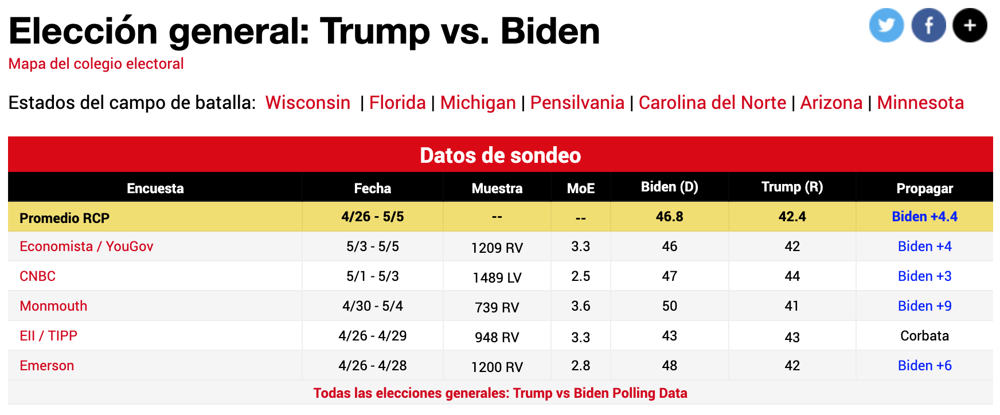

Chapter 9 Statistical Inference
To infer means to draw a conclusion from general or particular facts. Statistical inference is a set of methods and techniques that allow deducing characteristics of a population using data from a random sample. The method we are going to use most to infer is the parameter estimation method.
We estimate parameters of a population from a sample because very rarely we will be able to have access to all the data of the population. Such is the case of election polls, disease studies, etc.
9.1 Learning Objectives
After completing this chapter, you will be able to:
In this chapter, we will build the foundation for making valid conclusions from data. We will start by mastering the calculation of expected values and standard errors, which are critical for characterizing random variables. Then, we will explore the Central Limit Theorem to understand how sampling distributions behave. Finally, we will apply these concepts to estimate population parameters from sample data, calculating confidence intervals and margins of error to analyze real-world scenarios like election polling.
We will introduce fundamental concepts such as expected value and standard error, which will be useful to us to make inferences.
9.2 Expected Value
Let’s use the following case to understand this concept intuitively.
We have been hired in a casino to analyze if it is reasonable to install a roulette with 37 values ranging from 0 to 36. The house wants to open the game with a special offer if the ball lands on 0 or 21 paying 10 to 1. This means that if a player plays and wins we pay them 10 dollars and if they lose they would pay us 1 dollar.
With what we have learned so far we can simulate our game with the case data. We have 37 values, of which in 2 of them give a player a profit of +10 or a loss -1. Let’s also define prob_win as the probability that a player wins.
# Total times played
plays <- 1
# Probability that a player wins each time
prob_win <- 2/37
prob_lose <- 1 - prob_win
# Random sample
sample_vec <- sample(c(10, -1), plays, replace = TRUE, prob = c(prob_win, prob_lose))
sample_vec
#> [1] -1The distribution of this variable is simple given that it can only take two values: 10 or -1. When we simulate a very large number of games it can be seen how it is distributed according to the indicated probability of winning and losing.
plays <- 100000
prob_win <- 2/37
prob_lose <- 1 - prob_win
tibble(outcome = sample_vec) |>
ggplot(aes(x = factor(outcome))) +
geom_bar(fill = "steelblue") +
labs(x = "Outcome ($)", y = "Count", title = "Distribution of Roulette Outcomes")
We have been using Monte Carlo simulation to estimate what the mean of the game results would be in real life.
In addition, we have seen that, the more the sample grows, our mean in the Monte Carlo simulation converges to a value, in this case the probability of winning mainly in the roulette. That value to which it converges we will call expected value, which as its name indicates will be the value we expect to obtain in reality. The more the sample size grows the more our sample mean converges to this expected value. The notation we will use will be \(E[X]\).
When there are only two possible results \(a\) and \(b\) with proportions \(p\) and \(1-p\) respectively, the expected value will be calculated using this formula:
\(E[X] = ap + b(1-p)\)
Previously we had calculated the mean using Monte Carlo simulation. If we compare it with the expected value we see how both numbers are approximately the same, as the theory predicts.
Returning to the simulation of roulette games, a single person does not play so many times. Each person plays about 40 times a day at roulette. Thus, we can generate 40 games that a random player could play and find how much he would win:
plays <- 40
prob_win <- 2/37
prob_lose <- 1 - prob_win
sample_vec <- sample(c(10, -1), plays, replace = TRUE, prob = c(prob_win, prob_lose))
sum(sample_vec)
#> [1] -18Finally, not only one person will play. Let’s replicate this sample about 100,000 times to simulate the number of players we would have in a quarter.
players <- 100000
plays <- 40
prob_win <- 2/37
prob_lose <- 1 - prob_win
set.seed(2025)
winnings_simulation <- replicate(players, {
sample_vec <- sample(c(10, -1), plays, replace = TRUE, prob = c(prob_win, prob_lose))
sum(sample_vec)
})So far we have done the same as we have learned in previous chapters. However, we could also see how the players’ winnings are distributed. And for that it is enough to create a histogram of the result.
tibble(winnings = winnings_simulation) |>
ggplot(aes(x = winnings)) +
geom_histogram(bins = 30, fill = "steelblue", color = "white") +
labs(x = "Total Winnings ($)", y = "Count", title = "Distribution of Player Winnings")
It is not a coincidence that if we create a histogram with all the winnings of all the players the result looks like a normal distribution. In fact, that was the main approach that George Pólya made in 1920 when he presented his Central Limit Theorem.
9.3 Central Limit Theorem
The Central Limit Theorem tells us that if we take several samples of the same size \(n\) and in each sample we sum the values within each sample we will obtain a value \(S\) (the sum) then we will find that its distribution approximates well to a normal curve.
If we replicate this language to our example it would be: The central limit theorem tells us that if we take samples of 40 games for each player and then calculate for each player the total they won, then we will find that the distribution of the amount won by many players approximates a normal distribution.
Since it is a new distribution, we can calculate its mean and standard deviation. Being samples we will use the learned term expected value of the sum to refer to the sample mean and we will add the term of standard error of the sum to refer to the sample standard deviation
This would be the formula to calculate the expected value of the sum:
\(E[S_n] = n (ap+b(1-p))\)
plays <- 40
prob_win <- 2/37
prob_lose <- 1 - prob_win
# Expected value of the sum
E_sum <- plays * ( (10)*prob_win + (-1)*prob_lose )
E_sum
#> [1] -16.21622And to calculate the standard error of the sum we will use the following formula:
\(SE[S_n]=\sqrt{n}\ |a-b|\ \sqrt{p(1-p)}\)
plays <- 40
prob_win <- 2/37
prob_lose <- 1 - prob_win
# Standard error of the sum
SE_sum <- sqrt(plays) * abs(10 - -1) * sqrt(prob_win*prob_lose)
SE_sum
#> [1] 15.73149With these two theoretical data, the expected value and the standard error, we can graph the normal curve of the sum of winnings of our game.

What does this mean? That if theoretically we can already graph the normal curve then we can also calculate the probability that the sum is greater or less than some value. This is the main advantage of the Central Limit Theorem since we can calculate probabilities of the population using this approximation and the data of a single sample.
For example, if we want to know what is the probability that a player wins money after playing 40 times in roulette we would have to calculate the probability that \(S\) is greater than zero, represented by the blue shaded area:

To perform this calculation in R we would use the pnorm function:
# Probability of getting more than 0 dollars having played 40 games:
1- pnorm(0, E_sum, SE_sum)
#> [1] 0.1513144Let’s validate that the Monte Carlo simulation approximates this theoretical value we just calculated:
# Probability of getting more than 0 dollars having played 40 games:
mean(winnings_simulation > 0)
#> [1] 0.16813We have used two ways to estimate the probability, the theoretical estimation using the central limit theorem and the Monte Carlo simulation. These two numbers are quite close to the real probability. In both cases, the larger the sample, the more reasonable our estimation will be.
On the other hand, the same happens if we wanted to analyze the average and not the sum of the winnings. But for the average case we will use the following formulas:
- Expected value of the average: \(E[\overline{X}]=ap+b(1-p)\).
- Standard error of the average: \(SE[\overline{X}]=|a-b|\sqrt{\frac{p(1-p) }{n}}\).
9.4 Key Takeaways
This chapter provided the tools to quantify uncertainty. We learned that the Expected Value, \(E[X]\), represents the long-term average outcome of a random variable. The Central Limit Theorem is the bridge that allows us to approximate the sum of independent samples using a normal distribution, regardless of the original population’s shape. This theorem enables us to calculate the Expected Value of the Sum (\(E[S_n] = n \cdot E[X]\)) and the Standard Error of the Sum (\(SE[S_n] = \sqrt{n} \cdot SE[X]\)), empowering us to estimate probabilities and make inferences about a population without needing to measure every single individual.
9.5 Exercises
The admission exam of the National Univ. of San Marcos consists of 100 multiple choice questions (A, B, C, D, E) with a value of 20 points for each correct question and 1.125 for each wrong answer. We want to analyze what would happen if a student answers all 100 questions randomly and if there are chances of getting a vacancy knowing that minimum 900 points are needed to enter some career.
- Consider a multiple-choice exam with 100 questions, where each correct answer awards 20 points and each wrong answer deducts 1.125 points. Determine the expected value of points a student would receive for a single question if they guessed randomly among the 5 options.
Solution
- Based on the expected value for a single question, calculate the total expected value if a student guesses on all 100 questions of the exam.
- Calculate the standard error associated with the total score if a student guesses on all 100 questions.
Solution
- Using the Central Limit Theorem and the values calculated previously, determine the probability that a student guessing on all questions would achieve a score higher than 900 points.
Solution
min_score <- 900
# Probability of obtaining less than the minimum:
prob <- pnorm(min_score, E_sum, SE_sum)
# Probability of obtaining more than the minimum:
1 - probThis means that the probability that a student obtains the minimum score by guessing all the questions is: 0.0000000000014525.
Conclusion: let’s study before taking the exam. It is not reasonable to take the exam randomly and mark randomly.
Recall that
e-nis the representation of \(10^{-n}\).
- Validate your theoretical calculation by running a Monte Carlo simulation. Simulate the exam scores for 22,000 applicants guessing randomly and calculate the proportion who score above 900 points.
Solution
total <- 22000
set.seed(2025)
admission_simulation <- replicate(total, {
exam_score <- sample(c(points_correct, points_wrong), n, replace = TRUE, prob = c(prob_correct, prob_wrong) )
sum(exam_score)
})
# Probability of obtaining more than 900 points:
mean(admission_simulation > 900)
# Histogram if we want to see the distribution of points obtained:
hist(admission_simulation)We see that the simulation gives us practically the same result. Practically there are no possibilities of entering UNMSM by guessing the answers.
9.6 Parameter Estimation Method
So far, using Monte Carlo simulation we have built samples randomly, but knowing the probability of occurrence. However, we will not always know the proportion previously. If we have, for example, a population and we want to know how many have been infected by Covid-19, we cannot test everyone. Or if we have the total voters for an election, we cannot survey everyone to know who would win. Not only is it very expensive, but it would take us a lot of time.
The parameter estimation method is the procedure used to know the characteristics of a population parameter, from the knowledge of a sample of \(n\) respondents
We will analyze this following case.
We have two political parties: Blue and Red. We do not know how much the total population is, nor the proportion that will vote for one or the other party. The only thing we can do is conduct voting intention polls.
For example, these would be the results of the poll of a random sample of 10 people:

Intuitively we know that we cannot deduce which party will win given that the sample is very small. To know which party will win we need to estimate as precisely as possible the parameter \(p\) that represents the proportion of voters of the Blue Party in the population and the parameter \(1-p\) that represents the proportion of voters of the Red party.
Making some mathematical transformations to our theoretical estimates seen previously and defining \(a=1\) as value if they vote Blue and \(b=0\) if they do not vote for Blue, we can obtain the following theoretical estimates for this case:
By defining a vote for Blue as \(a=1\) and a vote for others as \(b=0\), we can derive theoretical estimates that link our sample data to the unknown population parameter \(p\).
First, consider the expected value of a single vote. Mathematically, \(E[X]=p\). This confirms that the value we expect to obtain from a single random voter matches the proportion \(p\) we are trying to find.
Next, we look at the expected value of the average across multiple surveys. If we were to conduct many surveys of \(n\) respondents each, the average of these sample means, denoted as \(E[\overline{X}]\), would also equal \(p\). This reinforces that our sample mean is an unbiased estimator of the population proportion.
Finally, we must account for variability using the standard error of the average, defined as \(SE[\overline{X}]=\sqrt{\frac{p(1-p) }{n}}\). This metric tells us how much the results of our multiple surveys would fluctuate around the true parameter \(p\), taking into account the sample size \(n\).
The expected value of the average \(E[\overline{X}]\), formula 2, is theoretically equal to the parameter \(p\) that we are looking to estimate. However, without knowing how much \(p\) is we would have to have multiple samples of \(n\) respondents, then calculate the mean for each case \(\overline{X}\) and finally calculate the average of these values. This is very expensive, so we will look for another way to estimate \(E[\overline{X}]\).
Given that we do not have so far how to estimate \(E[\overline{X}]\), and given that we know that \(E[\overline{X}]=p\) then we could give several values to \(p\) and see the impact on the standard error of the average that we know also depends on \(p\).
Let’s generate, first, a sequence of parameter \(p\), from 0% to 100%, 100 different values:
p <- seq(0, 1, length=100)
p
#> [1] 0.00000000 0.01010101 0.02020202 0.03030303 0.04040404 0.05050505
#> [7] 0.06060606 0.07070707 0.08080808 0.09090909 0.10101010 0.11111111
#> [13] 0.12121212 0.13131313 0.14141414 0.15151515 0.16161616 0.17171717
#> [19] 0.18181818 0.19191919 0.20202020 0.21212121 0.22222222 0.23232323
#> [25] 0.24242424 0.25252525 0.26262626 0.27272727 0.28282828 0.29292929
#> [31] 0.30303030 0.31313131 0.32323232 0.33333333 0.34343434 0.35353535
#> [37] 0.36363636 0.37373737 0.38383838 0.39393939 0.40404040 0.41414141
#> [43] 0.42424242 0.43434343 0.44444444 0.45454545 0.46464646 0.47474747
#> [49] 0.48484848 0.49494949 0.50505051 0.51515152 0.52525253 0.53535354
#> [55] 0.54545455 0.55555556 0.56565657 0.57575758 0.58585859 0.59595960
#> [61] 0.60606061 0.61616162 0.62626263 0.63636364 0.64646465 0.65656566
#> [67] 0.66666667 0.67676768 0.68686869 0.69696970 0.70707071 0.71717172
#> [73] 0.72727273 0.73737374 0.74747475 0.75757576 0.76767677 0.77777778
#> [79] 0.78787879 0.79797980 0.80808081 0.81818182 0.82828283 0.83838384
#> [85] 0.84848485 0.85858586 0.86868687 0.87878788 0.88888889 0.89898990
#> [91] 0.90909091 0.91919192 0.92929293 0.93939394 0.94949495 0.95959596
#> [97] 0.96969697 0.97979798 0.98989899 1.00000000Thinking of 100 different values of \(p\) would be like thinking of 100 different elections where the Blue party and the red one have participation, like the election for mayors nationwide. In some districts the candidate of the Blue party loses with 0%, in others ties at 50% and in others wins clearly with 100% of the votes.
Intuitively we know that if our real proportion was \(p=80\%\) for the Blue party, that is that 8 out of every 10 will vote Blue, then it is very likely that in each survey we take we will find that in that district the Blue party has the majority of votes. This is predicted with the formula seen before and also includes the size of the survey \(n\) as part of the calculation:
\(SE[\overline{X}]=\sqrt{\frac{p(1-p) }{n}}\)
That said, let’s return to our vector p that contains several values of parameter \(p\). On those values we can calculate what would happen if we survey groups of 20 people. Knowing the sample size we can calculate the standard error of the average for each of the values of \(p\):
# Total people in each survey:
n <- 20
# Standard error of the average:
SE_avg <- sqrt(p*(1-p))/sqrt(n)
SE_avg
#> [1] 0.00000000 0.02235954 0.03145942 0.03833064 0.04402928 0.04896646
#> [7] 0.05335399 0.05731823 0.06094183 0.06428243 0.06738214 0.07027284
#> [13] 0.07297936 0.07552152 0.07791540 0.08017428 0.08230929 0.08432982
#> [19] 0.08624394 0.08805856 0.08977974 0.09141275 0.09296223 0.09443229
#> [25] 0.09582660 0.09714840 0.09840064 0.09958592 0.10070661 0.10176486
#> [31] 0.10276258 0.10370152 0.10458327 0.10540926 0.10618079 0.10689904
#> [37] 0.10756509 0.10817988 0.10874431 0.10925913 0.10972506 0.11014270
#> [43] 0.11051262 0.11083529 0.11111111 0.11134044 0.11152357 0.11166072
#> [49] 0.11175205 0.11179770 0.11179770 0.11175205 0.11166072 0.11152357
#> [55] 0.11134044 0.11111111 0.11083529 0.11051262 0.11014270 0.10972506
#> [61] 0.10925913 0.10874431 0.10817988 0.10756509 0.10689904 0.10618079
#> [67] 0.10540926 0.10458327 0.10370152 0.10276258 0.10176486 0.10070661
#> [73] 0.09958592 0.09840064 0.09714840 0.09582660 0.09443229 0.09296223
#> [79] 0.09141275 0.08977974 0.08805856 0.08624394 0.08432982 0.08230929
#> [85] 0.08017428 0.07791540 0.07552152 0.07297936 0.07027284 0.06738214
#> [91] 0.06428243 0.06094183 0.05731823 0.05335399 0.04896646 0.04402928
#> [97] 0.03833064 0.03145942 0.02235954 0.00000000Now let’s generate a scatter plot of both the different values of \(p\) and the standard errors for each \(p\).
tibble(p = p, SE_avg = SE_avg) |>
ggplot(aes(x = p, y = SE_avg)) +
geom_point(color = "steelblue") +
coord_cartesian(ylim = c(0, 0.12)) +
labs(x = "Proportion (p)", y = "Standard Error", title = "Standard Error vs. Proportion")
Thus, we see how we can obtain different standard errors of the average for different values of \(p\).
Intuitively we had the notion of what would happen given a \(p=80\%\). Now in the graph we see it better. If the real intention of vote was 80% in that district then when taking several surveys and seeing the results of each survey we would obtain as expected value 80% and as standard error 8.8% or 0.088 as seen in the graph highlighted in blue:
coord_x <- 0.8
coord_y <- sqrt(coord_x * (1 - coord_x)) / sqrt(n)
tibble(p = p, SE_avg = SE_avg) |>
ggplot(aes(x = p, y = SE_avg)) +
geom_point(color = "steelblue") +
geom_hline(yintercept = coord_y, linetype = "dashed", color = "blue") +
geom_vline(xintercept = coord_x, linetype = "dashed", color = "blue") +
coord_cartesian(ylim = c(0, 0.12)) +
labs(x = "Proportion (p)", y = "Standard Error", title = "SE at p = 80%")
With these values of \(E[\overline{X}]=p=80\%\) and \(SE[\overline{X}]=8.8\%\) of standard error we can calculate a range of one standard error around \(80\%\), which would go from \(71.2\%\) to \(88.8\%\) and then calculate what would be the probability that the mean \(\overline{X}\) found in one of the surveys falls in this range. Visually it would be:

In R, calculating the probability that a data point falls in the range of 1 standard error would be:
# Calculation of probability that dat is between -1 and 1 standard error:
pnorm(1) - pnorm(-1)
#> [1] 0.6826895We can expand to have a greater range of 2 standard errors around \(80\%\) and increase our probability:

In R it would be:
# Calculation of probability that dat is between -2 and 2 standard errors:
pnorm(2) - pnorm(-2)
#> [1] 0.9544997The probability increases to 95%, however how do we interpret this?. We haven’t even calculated the real value of the mean \(\overline{X}\) of some survey.
Simple, this means that, theoretically, there is a 95% probability that the mean \(\overline{X}\) that we find in each survey is in the range of 62% to 98%, two standard errors around \(80\%\). 95% of the time in the worst case, in a survey of 20 people, the Blue party would obtain 62% and in the best case 98%, so we could predict that the Blue party will win. Or not?
Several things should make noise to us so far. First, the range so large, from 62% to 98%. Second, we have assumed a scenario: that the Blue voting intention was known and was 80%. That is, we have assumed \(p=80\%\) which allowed us to calculate \(E[\overline{X}]=80\%\) and place that value at the center of the normal. However, \(p\) is unknown and is precisely what we are trying to estimate.
If, on the contrary, the result was tighter, for example \(p=55\%\), such a wide range would not serve us. Let’s see how it would be:
coord_x <- 0.55
coord_y <- sqrt(coord_x * (1 - coord_x)) / sqrt(n)
tibble(p = p, SE_avg = SE_avg) |>
ggplot(aes(x = p, y = SE_avg)) +
geom_point(color = "steelblue") +
geom_hline(yintercept = coord_y, linetype = "dashed", color = "blue") +
geom_vline(xintercept = coord_x, linetype = "dashed", color = "blue") +
coord_cartesian(ylim = c(0, 0.12)) +
labs(x = "Proportion (p)", y = "Standard Error", title = "SE at p = 55%")
If the real voting intention was \(55\%\) we would have an expected value of the average \(E[\overline{X}]=p=55\%\) and a corresponding standard error of the average \(SE[\overline{X}]=11\%\). Again, by Central Limit Theorem we can calculate a range of two standard errors around \(55\%\):

The calculation of the probability of being in that range in R would be the same because we continue in the range of 2 standard errors. Therefore the probability would be the same.
# Calculation of probability that dat is between -2 and 2 standard errors:
pnorm(2) - pnorm(-2)
#> [1] 0.9544997However, what does change is the range. Now the range goes from 32.8% to 77.2%, two standard errors around the expected value of the average \(E[\overline{X}]\). Although the probability is still 95%, that does not help us at all this time because there is 95% that what we find in our sample is a value between 33% and 77%. Some survey samples will give us 33% of votes for Blue and other samples 77%.
And the problem lies in the number of samples taken \(n\). If we see again the formula we see how \(n\) influences the result.
\(SE[\overline{X}]=\sqrt{\frac{p(1-p) }{n}}\)
Let’s increment then our number of respondents to 500:
n <- 500
p <- seq(0, 1, length = 100)
SE_avg <- sqrt(p*(1-p))/sqrt(n)
tibble(p = p, SE_avg = SE_avg) |>
ggplot(aes(x = p, y = SE_avg)) +
geom_point(color = "steelblue") +
coord_cartesian(ylim = c(0, 0.12)) +
labs(x = "Proportion (p)", y = "Standard Error", title = "SE vs Proportion (n = 500)")
This sample gives us smaller standard errors. For example, if the real proportion of voters of the Blue party was \(p=55\%\) we would have \(E[\overline{X}]=p=55\%\) and a \(SE[\overline{X}]=2.2\%\):
coord_x <- 0.55
coord_y <- sqrt(coord_x * (1 - coord_x)) / sqrt(n)
tibble(p = p, SE_avg = SE_avg) |>
ggplot(aes(x = p, y = SE_avg)) +
geom_point(color = "steelblue") +
geom_hline(yintercept = coord_y, linetype = "dashed", color = "blue") +
geom_vline(xintercept = coord_x, linetype = "dashed", color = "blue") +
coord_cartesian(ylim = c(0, 0.12)) +
labs(x = "Proportion (p)", y = "Standard Error", title = "SE at p = 55% (n = 500)")
If we now calculate a range of two standard errors around \(55\%\) we would have a range that goes from \(50.6\%\) to \(59.4\%\). Again, interpretation is that the mean that we find in our random survey has a 95% probability of being in that range.
We see then that this theoretical prediction, the standard error, becomes smaller as the sample size \(n\) increases and in turn depends on the probability of the population \(p\) that we do not know. Moreover, with a real value of \(p=0.5\), (50%), we have the maximum value of the standard error that we can obtain. Thus, if we correct \(p\) at 50%, which would be the extreme of cases, a tie, we can calculate how the value of the standard error of the average changes according to the sample size:
p <- 0.5
n <- seq(20, 5000, 20)
SE_avg <- sqrt(p*(1-p)/n)
tibble(n = n, SE_avg = SE_avg) |>
ggplot(aes(x = n, y = SE_avg)) +
geom_line(color = "steelblue") +
geom_hline(yintercept = 0.015, linetype = "dashed", color = "blue") +
geom_vline(xintercept = 1000, linetype = "dashed", color = "blue") +
labs(x = "Sample Size (n)", y = "Standard Error", title = "SE vs Sample Size (p = 50%)")
A sample of 1,000 people, for example, generates us a maximum standard error of 0.015 or 1.5%.
9.6.1 Margin of Error
As we have already seen, we could consider a range of 1 standard error or 2 standard errors around \(E[\overline{X}]\) and calculate the probability that our sample mean \(\overline{X}\) is in that range. Or what is mathematically the same, we could say that if we build a range of 1 or 2 standard errors around our sample mean \(\overline{X}\) there is a determined probability that in that range is included the expected value \(E[\overline{X}]\) which is, by formula equal to \(p\), the value we want to estimate.
It is crucial then to calculate the standard error of the average \(SE[\overline{X}]\), but we see ourselves limited because it depends on \(p\).
There is another way to calculate \(SE[\overline{X}]\) without using \(p\) and is known as the standard error of estimation \(\hat{SE}[\overline{X}]\). For this we will use the following formula:
\(\hat{SE}[\overline{X}]=\sqrt{\frac{\overline{X}(1-\overline{X})}{n}}\)
Where, as we already know, \(\overline{X}\) is the mean of our sample or sample mean. For our example case, it is the percentage that the Blue party obtained in the survey we conducted.
Now that we have the sample mean \(\overline{X}\) and we can already calculate the standard error of estimation \(\hat{SE}[\overline{X}]\) we can start building ranges around \(\overline{X}\) that increase the probability of finding \(p\).
To make communication simpler, we will use by convention the notation margin of error to indicate that we are going to take a range of 2 standard errors of estimation.
For example, we have a sample of 1100 people and after reviewing the survey results we have a sample mean of \(\overline{X}=56\%\) for the Blue party. With this we can estimate the standard error of estimation \(\hat{SE}[\overline{X}]\) with the formula we just described and finally calculate the margin of error.
# Total respondents
total <- 1100
# Survey results, 56% indicated Blue:
X_avg <- 0.56
# Standard error estimation
SE_est <- sqrt(X_avg * (1 - X_avg)/total)
SE_est
#> [1] 0.01496663
# Margin of error, MoE
MoE <- 2 * SE_est
MoE
#> [1] 0.02993326With this we would have that from a sample of 1100 people, we have estimated 56% voting intention for the Blue party with a margin of error of \(+- 2.99\%\).
Finally, let’s see examples of the different surveys conducted in April and early May 2020 to measure voting intentions in the US.

We see as columns:
The table columns provide key details about each survey. The Poll column identifies the surveying company, while Date indicates when the survey was conducted. Sample shows the number of respondents, which varies by pollster, and MoE represents the margin of error. The Candidates columns display the backing for each presidential contender (note that percentages may not sum to 100% due to checking for blank or null votes). Finally, Spread estimates the lead one candidate holds over the other.
If, on the other hand, we ask ourselves why larger surveys are not done, for example 50,000 people, the reason is that:
You might wonder why we rely on smaller samples instead of surveying, say, 50,000 people. The primary constraint is cost; reaching such a large audience is prohibitively expensive. Furthermore, parameter estimation is inherently theoretical—providing a razor-thin margin of error implies a false sense of absolute certainty. In reality, voter opinions are fluid, no survey is perfectly random (often missing rural populations), and respondents who claim they will vote might ultimately stay home.
9.6.2 Confidence Intervals
Confidence intervals are a very useful concept widely used by Data Scientists. However, it is nothing more than another way of expressing what we have already learned so far.
And it is that a confidence interval of 95% tells us that there is a 95% probability that the interval we generate includes the parameter \(p\) that we want to estimate. This is nothing more than another way of indicating that we have to build an interval considering the margin of error, that is two standard errors around our sample mean.
For the sample of 1100 people we saw in the previous section, we reported an estimate of 56% with a margin of error of \(+- 2.99\%\).
If we now want to use confidence intervals in our language we would say: We estimate 56% for the Blue party with a confidence interval of 95%. This confidence interval goes from 53% to 59%.
9.7 Spread Estimation
Although we are interested in estimating the proportion that the Blue party would obtain \(p\), sometimes it is more useful to know the difference (by how much it wins/loses). For example, when we have two parties in the second round of elections not only do we have votes for Blue and Red, but also blank/spoiled. Also, in regular elections we have more than one pollster doing several surveys. So one could give 45% for Blue, 41% for Red. While another can give 41% for Blue and 38% for Red, etc. If we compare surveys, rather than knowing the exact percentage it is more useful to know by how much the blue party wins, since if we see that in all, for example it wins by 4%, with a tiny standard error, then \(p\) would not matter much. Only with the difference data we could take get an idea of who will win.
This difference is called spread. We had defined that the voting intention for the Blue party was \(p\) and for the red party \(1-p\). So what we would expect to obtain for the difference would be \(p - (1-p)\), that is \(2p - 1\).
Standard error of the spread:
\(SE[spread]=2\sqrt{\frac{p(1-p) }{n}}\)
We see that the standard error is twice the standard error of the average, which depends on \(p\), and we have already found previously an estimation to not depend on \(p\) but on the mean of our sample. So we will use:
\(\hat{SE[spread]}=2\sqrt{\frac{\overline{X}(1-\overline{X}) }{n}}\)
Let’s see with an example these concepts. Let’s study the 2016 US elections. In this case we have multiple pollsters, conducting multiple surveys months prior to elections, and mainly two parties competing for president.
We are going to use the polls_us_election_2016 data frame included in the dslabs library which includes data from multiple surveys conducted for the 2016 US elections between Hillary Clinton and Donald Trump. The first thing we will do is explore the data:
As we see, we do not have the standard error, nor the confidence interval. So we will proceed to make some mutations applying the formulas learned so far focusing on the voting intention for Hillary Clinton.
surveys <- polls_us_election_2016 |>
filter(state == "U.S.") |>
mutate(X_avg = rawpoll_clinton/100) |>
mutate(SE_prom = sqrt((X_avg*(1-X_avg))/samplesize)) |>
mutate(inferior = X_avg - 2*SE_prom,
superior = X_avg + 2*SE_prom) |>
select(pollster, enddate, X_avg, SE_prom, inferior, superior)
# First 5 rows
surveys |>
head(5)
#> pollster enddate X_avg SE_prom inferior superior
#> 1 ABC News/Washington Post 2016-11-06 0.4700 0.010592790 0.4488144 0.4911856
#> 2 Google Consumer Surveys 2016-11-07 0.3803 0.002978005 0.3743440 0.3862560
#> 3 Ipsos 2016-11-06 0.4200 0.010534681 0.3989306 0.4410694
#> 4 YouGov 2016-11-07 0.4500 0.008204286 0.4335914 0.4664086
#> 5 Gravis Marketing 2016-11-06 0.4700 0.003869218 0.4622616 0.4777384For example, IPSOS in a survey published on 11/06/16 estimated 42% voting intention for Clinton with a 95% confidence interval in a range going from 39.89% to 44.10%.
Does this data mean that they estimated she would lose? No, given that in this case we are using real data the proportion of votes for Clinton with those for Trump will not sum 100%. In fact, on actual election day Clinton obtained 48.2% and Trump 46.1% of total votes cast. That is real \(p\) was 48.2%.
What we could calculate is how many of these pollsters guessed right in their estimation. That is, if in their confidence intervals is the \(p=48.2\%\) that Clinton finally obtained. To do this, we will add a column guessed_right (guessed_right) with the validation of whether it is in the confidence interval and then use summarize() to calculate the percentage of surveys that guessed right.
surveys |>
mutate(guessed_right = inferior <= 0.482 & 0.482 <= superior) |>
summarize(mean(guessed_right))
#> mean(guessed_right)
#> 1 0.2802893Only 28% of published surveys published confidence intervals that included \(p\). This, among many other reasons, because at the beginning there are many more undecided who finally decide in the last weeks.
Let’s analyze now how many guessed right in the spread. It could be that even though they did not estimate exact \(p\) the difference did remain over time. To do this, let’s add to our surveys the column spread with the difference of votes:
surveys_spread <- polls_us_election_2016 |>
filter(state == "U.S.") |>
mutate(spread = (rawpoll_clinton - rawpoll_trump)/100)And now we are going to do a trick calculating the spread of our sample:
\(spread=2*\overline{X}-1\)
We can transform this formula:
\(spread-1=2*\overline{X}\)
\(\frac{spread-1}{2}=\overline{X}\)
Or what is the same:
\(\overline{X}=\frac{spread-1}{2}\)
This formula gives us an approximation of how much \(\overline{X}\) would be transformed to a scale of 0 to 100%. With it, let’s calculate the standard error and the confidence interval:
surveys_spread <- surveys_spread |>
mutate(X_avg = (spread + 1)/2) |>
mutate(SE_spread = 2*sqrt((X_avg*(1-X_avg))/samplesize)) |>
mutate(inferior = spread - 2*SE_spread,
superior = spread + 2*SE_spread) |>
select(pollster, enddate, spread, SE_spread, inferior, superior)
# First 5 rows
surveys_spread |>
head(5)
#> pollster enddate spread SE_spread inferior
#> 1 ABC News/Washington Post 2016-11-06 0.0400 0.021206832 -0.002413664
#> 2 Google Consumer Surveys 2016-11-07 0.0234 0.006132712 0.011134575
#> 3 Ipsos 2016-11-06 0.0300 0.021334733 -0.012669466
#> 4 YouGov 2016-11-07 0.0400 0.016478037 0.007043926
#> 5 Gravis Marketing 2016-11-06 0.0400 0.007746199 0.024507601
#> superior
#> 1 0.08241366
#> 2 0.03566542
#> 3 0.07266947
#> 4 0.07295607
#> 5 0.05549240Now let’s calculate how many of these pollsters guessed right in their estimation. That is, if in their confidence intervals is the real value of \(spread=48.2\%-46.1\%=2.1\%\) that Clinton finally obtained spread. To do this, we will add the column guessed_right and then summarize().
surveys_spread |>
mutate(guessed_right = inferior <= 0.021 & 0.021 <= superior) |>
summarize(mean(guessed_right))
#> mean(guessed_right)
#> 1 0.6735986In this case we see how 67.3% of the time, surveys correctly estimated the difference in votes favorable to Clinton.
As a clarification, final reminder of this case, even though Clinton obtained more votes she did not win the elections because the US system is different and not necessarily if you win in votes you obtain the presidency.
9.8 Estimates Outside Election Polls
We have used election polls to understand statistical inference concepts. However, most Data Scientists are not related to voting intention estimation calculations. That does not mean we will not use those concepts. The central limit theorem not only works in election polls. What it means is that we will use some slightly different formulas that apply to more daily life cases.
From what we have learned so far the main change is the formula to calculate the standard error. We will use instead the standard deviation \(\sigma\) of the sample to calculate the standard error:
\(SE[\overline{X}]=\frac{\sigma}{\sqrt{n}}\)
Where \(\overline{X}\) is the average of our random sample and \(n\) is the sample size.
9.8.1 Example: Estimating Average Height
Let’s apply this to a real-world scenario. Suppose we want to estimate the average height of adult males in a population, but we can only measure a sample of 50 people.
Using the heights dataset from dslabs, let’s simulate this process:
# Load the heights data
data(heights)
# Our "population" (in reality, we wouldn't have access to this)
population <- heights |>
filter(sex == "Male") |>
mutate(height_cm = height * 2.54) |> # Convert to cm
pull(height_cm)
# True population parameters (unknown in real life)
true_mean <- mean(population)
true_sd <- sd(population)
cat("True population mean:", round(true_mean, 2), "cm\n")
#> True population mean: 176.06 cm
cat("True population SD:", round(true_sd, 2), "cm\n")
#> True population SD: 9.17 cmNow let’s take a random sample and build a 95% confidence interval:
set.seed(42) # For reproducibility
n <- 50 # Sample size
# Take a random sample
sample_heights <- sample(population, n, replace = FALSE)
# Sample statistics
sample_mean <- mean(sample_heights)
sample_sd <- sd(sample_heights)
# Standard error of the mean
SE <- sample_sd / sqrt(n)
# 95% Confidence interval (2 standard errors)
ci_lower <- sample_mean - 2 * SE
ci_upper <- sample_mean + 2 * SE
cat("Sample mean:", round(sample_mean, 2), "cm\n")
#> Sample mean: 176.97 cm
cat("Standard error:", round(SE, 2), "cm\n")
#> Standard error: 1.44 cm
cat("95% CI: [", round(ci_lower, 2), ",", round(ci_upper, 2), "] cm\n")
#> 95% CI: [ 174.09 , 179.84 ] cm
cat("Does CI contain true mean?", ci_lower <= true_mean & true_mean <= ci_upper, "\n")
#> Does CI contain true mean? TRUELet’s visualize this with a Monte Carlo simulation to verify that our confidence intervals work as expected:
set.seed(123)
n_simulations <- 1000
n <- 50
results <- tibble(
sim_id = 1:n_simulations
) |>
mutate(
sample_data = map(sim_id, ~ sample(population, n, replace = FALSE)),
sample_mean = map_dbl(sample_data, mean),
sample_sd = map_dbl(sample_data, sd),
SE = sample_sd / sqrt(n),
ci_lower = sample_mean - 2 * SE,
ci_upper = sample_mean + 2 * SE,
contains_true = ci_lower <= true_mean & true_mean <= ci_upper
)
# Proportion of CIs that contain the true mean
cat("Proportion of 95% CIs containing true mean:",
round(mean(results$contains_true), 3), "\n")
#> Proportion of 95% CIs containing true mean: 0.956This confirms that approximately 95% of our confidence intervals capture the true population mean—exactly as the theory predicts!
9.9 Exercises
The most common data a Data Scientist manages comes from people, some attribute/characteristic of them. In these exercises we are going to use the heights data frame that we already used for other purposes in previous chapters.
- Create a vector named
xto extract the height data for all individuals in the dataset. Then, report the population’s average and standard deviation, ensuring you convert the heights to meters first.
Solution
Mathematically we use
xin lowercase to refer to our total population andXto refer to a random sample. We will denote the population mean as \(\mu\) and the population standard deviation as \(\sigma\)
Most of the time we will not have access to the mean and standard deviation of the population because it is very large and highly expensive.
- Assume we cannot access the entire population and can only obtain a random sample of 100 people. Simulate this by creating a random sample with replacement from
x, storing the values in a vector calledX. Using this sample data, construct a 95% confidence interval to estimate the population average.
Solution
- Validate your estimation method using a Monte Carlo simulation. Repeat the sampling process 10,000 times and calculate the percentage of expected confidence intervals that successfully capture the true population mean.